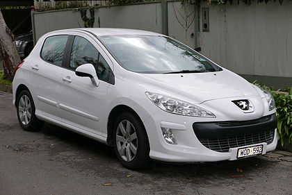

From Wikipedia, the free encyclopedia
The Peugeot 308 is a small family car produced by the French car manufacturer Peugeot. It was unveiled on 5 June 2007, and launched in September 2007.[1] Its development code was "Project T7",[2] and is the first car of the X08 generation of Peugeot models. The 308 features a range of petrol and diesel engine options. In March 2011, the 308 received a facelift, and it premiered at the Geneva Motor Show.
A second generation was unveiled in 2013, and it was awarded as the 2014 European Car of the Year.
| Peugeot 308 | |
|---|---|
| Overview | |
| Manufacturer | Peugeot |
| Production | 2007–present |
| Body and chassis | |
| Class | Small family car (C) |
| Body style | 3-door hatchback |
| 5-door hatchback | |
| 5-door wagon | |
| Chronology | |
| Predecessor | Peugeot 307 |
| Peugeot 308 I (T7) | |
|---|---|
|  | |
| Overview | |
| Manufacturer | Peugeot |
| Production | 2007–2013 |
| 2011–2016 (China) | 2012–present (Argentina) |
Launched as the replacement for the Peugeot 307 in most international markets, the new vehicle was based upon the old 307's chassis, but has new bodywork and is slightly longer and wider. Its coefficient of drag is 0.29, and it has a five-star rating on Euro NCAP. Following the facelift of March 2011, the drag factor was reduced to 0.28.[5]
The 308 HDi holds the Guinness world record of the most fuel efficient mainstream car currently in production, having averaged 3.13 litres per 100 kilometres (90 mpg‑imp; 75 mpg‑US) over a distance of 14,580 km (9,060 mi), but Peugeot ran foul of British advertising rules by claiming 126 mpg‑imp (2.24 L/100 km; 105 mpg‑US) in an advert for the car.[6]
The 308 is manufactured in France at the Mulhouse and Sochaux factories.[7] It is also manufactured in Kaluga, Russia, for the local market, since 2010, and El Palomar, Argentina, for the South American market since 2012.[8] The 308 remains in production for several countries, especially those that prefer saloon bodies, such as China.
The car got minor criticism in right hand drive markets, as the windscreen wiper mechanism was retained for left hand drive vehicles, meaning a large unwiped area at the top of the windscreen on the drivers side was present, but was absent on the passenger side, as the drivers side wiper was shorter, and the passenger wiper "went up" first.